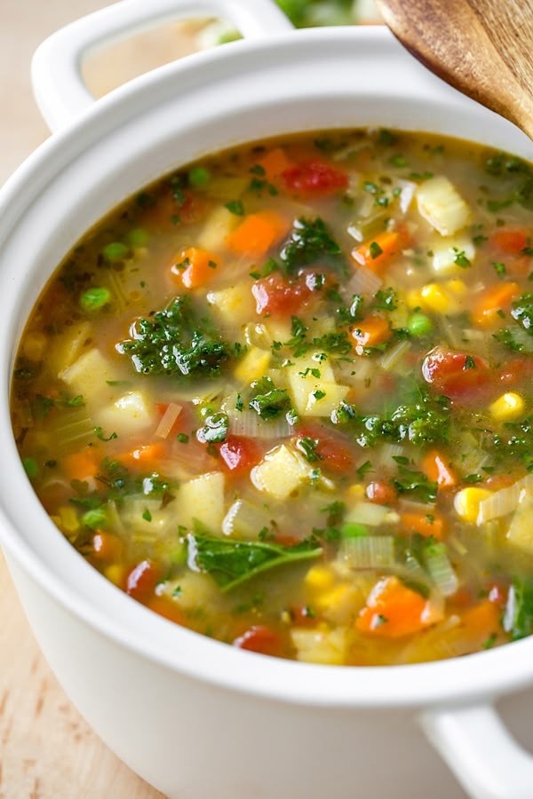

Soup
Ingredients
- Chicken
- Vegetables (carrots, celery, onions)
- Garlic
- Herbs (thyme, parsley)
- Salt
- Pepper
- Water or broth
- Noodles or rice (optional)
- Lemon juice (optional)
- Bay leaves
- Olive oil
- Parmesan cheese (optional)
- Croutons (optional)
- Chili flakes (optional)
- Spinach or kale (optional)
Instructions
- In a large pot, heat olive oil over medium heat.
- Add chopped onions, carrots, and celery. Sauté until softened.
- Add minced garlic and cook for another minute.
- Add chicken, water or broth, herbs, salt, and pepper.
- Bring to a boil, then reduce heat and simmer for 30-40 minutes.
- If using noodles or rice, add them in the last 10-15 minutes of cooking.
- Remove chicken, shred it, and return it to the pot.
- Add lemon juice and adjust seasoning if needed.
- Serve hot with optional toppings like Parmesan cheese or croutons.
- Enjoy your delicious soup!
- Store leftovers in the fridge for up to 3 days.
- Reheat on the stove or in the microwave before serving.
- Freeze any extra soup in airtight containers for future meals.
- Experiment with different vegetables and spices for variety.
- Try adding beans or lentils for extra protein and fiber.
- Use leftover rotisserie chicken for a quick and easy option.
- Make a vegetarian version by omitting chicken and using vegetable broth.
- Add a splash of soy sauce or hot sauce for extra flavor.
- Serve with crusty bread or crackers for a complete meal.
- Pair with a side salad for a healthy and balanced dinner.
- Use a slow cooker for an easy, hands-off cooking method.
- Make a creamy version by adding heavy cream or coconut milk.
- Top with fresh herbs like cilantro or basil for added freshness.
- Use a blender to puree the soup for a smooth texture.
- Make a spicy version by adding jalapeños or cayenne pepper.
- Try adding grains like quinoa or barley for added texture.
- Use a variety of chicken parts (thighs, drumsticks) for more flavor.
- Add a splash of white wine for depth of flavor.
- Use homemade broth for the best flavor.
- Make a one-pot meal by adding cooked rice or pasta directly to the soup.
- Try adding different types of beans for added protein and fiber.
- Use a pressure cooker for a quick and easy cooking method.
- Make a hearty stew by adding potatoes and other root vegetables.
- Use leftover vegetables or meats to avoid food waste and enhance flavor.
Image
